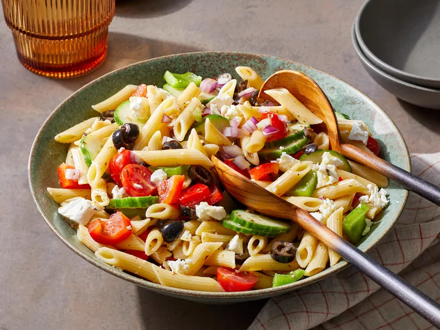

Greek Pasta Salad

Description:
Greek pasta salad is a vibrant, Mediterranean-inspired dish that combines tender pasta with the fresh, briny components of a traditional Greek "village" salad (horiatiki). It typically features a base of short, sturdy pasta like rotini, penne, or farfalle, which is tossed with a tangy olive oil and red wine vinegar dressing.
Greek pasta salad is an ideal make-ahead dish because it holds up well and the flavors often intensify after chilling for 1–2 hours. It stays fresh in the refrigerator for about 3 to 5 days. If the salad seems dry after refrigerating, let it sit at room temperature for 10 minutes or toss with a little extra olive oil to refresh the dressing.
Ingredients:
- 2 cups penne pasta
- ⅔ cup extra-virgin olive oil
- ¼ cup red wine vinegar
- 2 cloves garlic, crushed
- 1 tablespoon lemon juice
- 2 teaspoons dried oregano
- salt and pepper to taste
- 10 cherry tomatoes, halved
- 1 green bell pepper, chopped
- 1 red bell pepper, chopped
- 1 small red onion, chopped
- ½ cucumber, sliced
- ½ cup sliced black olives
- ½ cup crumbled feta cheese
Steps:
- Gather the ingredients.
- Fill a large pot with lightly salted water and bring to a rolling boil. Stir in penne and return to a boil. Cook pasta uncovered, stirring occasionally, until tender yet firm to the bite, about 10 minutes; rinse with cold water and drain well.
- Whisk olive oil, vinegar, garlic, lemon juice, oregano, salt, and pepper together in a bowl; set aside.
-
- Combine pasta, tomatoes, green and red peppers, onion, cucumber, olives, and feta cheese in a large bowl. Pour vinaigrette over pasta mixture and mix well.
- For best flavor, cover salad and chill in the refrigerator before serving to allow flavors to blend. Enjoy!